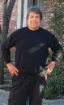

HOME RESTAURANT TO-GO MENU CATERING MENU ONLINE CATERING FORM INICIO MENÚ RESTAURANTE MENÚ CATERING FORMULARIO CATERING EN LÍNEA   Once upon a
time a world class cyclist had to
choose between competing
in the Tour de France,
and coming to America. The Tour's
loss was our gain: Guillermo
Muñiz left Guadalajara to pursue the American dream in the
1950s and eventually arrived in Pittsburg, California. Once upon a
time a world class cyclist had to
choose between competing
in the Tour de France,
and coming to America. The Tour's
loss was our gain: Guillermo
Muñiz left Guadalajara to pursue the American dream in the
1950s and eventually arrived in Pittsburg, California.
While working
two full-time jobs — at the local
cannery and as a dishwasher
— Guillermo met his wife, Teresa Guzman, when both were working at the original Mecca.
They went on to
purchase the Mecca and later move to its present location. The restaurant
became a regular clubhouse caterer for the
Oakland Athletics and the San Francisco
Giants, and even provided food for players and staff at the MLB All-Star
Games when they were in The City ('84)
and in Oakland ('87)! Having also served food for the 49ers and Golden State Warriors,
the Mecca is better known locally not only for having catered countless weddings, birthday parties, and other special events,
but also for its ongoing support of the community, including from sponsorsing youth sports, school events, scholarships, and community fundraisers.
Renovated and expanded in 2011,
with its beautiful copper
ceiling, the New Mecca Cafe has only increased its local
charm. It remains a mecca, a
destination for South-of-the-border
home cooking here in our own
Pittsburg. Mientras trabajaba
en dos empleos de tiempo completo — en la
enlatadora local y como lavaplatos
— Guillermo conoció a su esposa, Teresa Guzmán, cuando ambos trabajaban en el Mecca original.
Continuaron
comprando el Mecca y luego se mudaron a su ubicación actual. El restaurante
se convirtió en un proveedor regular del club de los
Oakland Athletics y los San Francisco
Giants, ¡e incluso proporcionó comida para jugadores y personal en los Juegos de Estrellas de la MLB
cuando estaban en The City ('84)
y en Oakland ('87)! Habiendo servido también comida para los 49ers y Golden State Warriors,
el Mecca es mejor conocido localmente no solo por haber atendido innumerables bodas, fiestas de cumpleaños y otros eventos especiales,
sino también por su apoyo continuo a la comunidad, incluyendo el patrocinio de deportes juveniles, eventos escolares, becas y recaudaciones de fondos comunitarias.
Renovado y ampliado en 2011,
con su hermoso techo de cobre
, el New Mecca Cafe solo ha aumentado su encanto
local. Sigue siendo un meca, un
destino para la cocina casera del sur de la frontera
aquí en nuestro propio
Pittsburg.
Saturday, April 16, 2011,
Guillermo was honored by the citizens and community of
Pittsburg for his life of service.
Sábado, 16 de abril de 2011,
Guillermo fue honrado por los ciudadanos y la comunidad de
Pittsburg por su vida de servicio. Sunday, October 4, 2015 Guillermo was inducted into the Pittsburg Entertainment & Arts Hall of Fame. Guillermo, ¡felicitaciones! Domingo, 4 de octubre de 2015 Guillermo fue incluido en el Salón de la Fama de Entretenimiento y Artes de Pittsburg. Guillermo, ¡felicitaciones! |